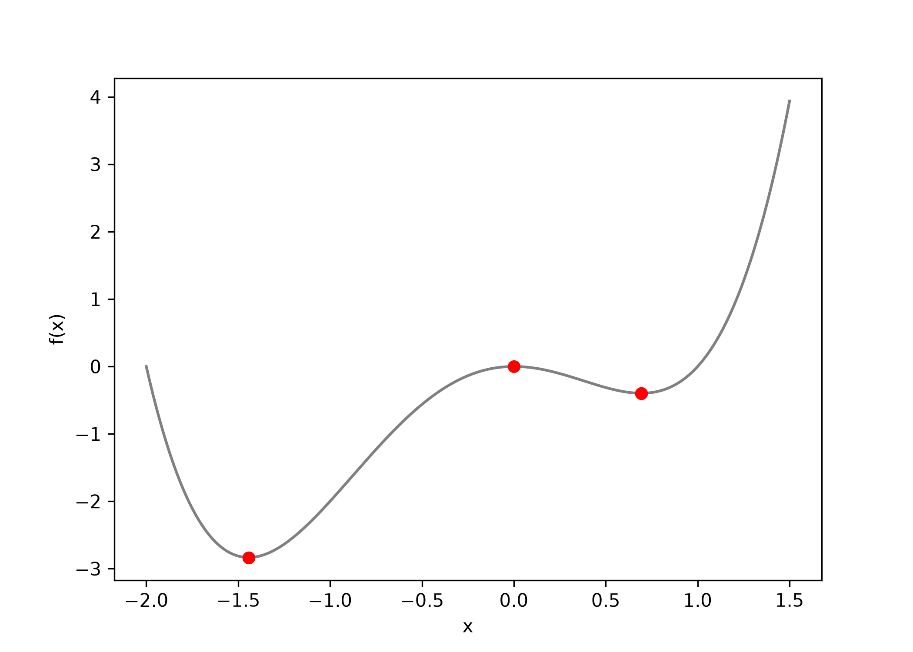

This is the longest exercise of the day and the only one where you will watch an algorithm fail. Run the cells as you read; the printed output is what you should get.
16.1 Objectives
Write the gradient descent update rule from memory and say what each symbol in it does.
Minimise a function of one variable in code, and diagnose from the printed path whether the learning rate is too large, too small, or about right.
Explain why the same algorithm started from two different places returns two different answers, and when that matters.
16.2 Why this, here
Chapter 15 found the lowest point of a loss surface by evaluating 15,251 candidate lines. That works for two parameters and nothing larger. Every model you will meet after this week — logistic regression on Day 4, and anything with a neural network in it afterwards — is fitted by the method on this page instead: start somewhere, measure which way is downhill, take a step, repeat.
16.3 The update rule
\[x_{n+1} = x_n - \alpha f'(x_n)\]
\(x_n\) is the current guess.
\(f'(x_n)\) is the derivative of the function at that guess — the slope.
\(\alpha\) is the learning rate: a small positive number controlling step size.
The minus sign carries the whole idea. Where the slope is positive the function rises to the right, so we subtract and move left; where it is negative we subtract a negative and move right. Either way the step is against the slope, and the steeper the slope the bigger the step.
16.4 Minimising \(f(x) = x^2\)
The derivative is \(f'(x) = 2x\), so the rule becomes \(x_{n+1} = x_n - 2\alpha
x_n\). We know the answer is \(x = 0\), which is why this is the example: you can see whether the algorithm is working.
alpha <-0.8x <--10path <-numeric(10)for (i in1:10) { x <- x - alpha *f_prime(x) path[i] <- xcat("step", i, ": x =", signif(x, 4), " f(x) =", signif(f(x), 4), "\n")}
#> step 1 : x = 6 f(x) = 36
#> step 2 : x = -3.6 f(x) = 12.96
#> step 3 : x = 2.16 f(x) = 4.666
#> step 4 : x = -1.296 f(x) = 1.68
#> step 5 : x = 0.7776 f(x) = 0.6047
#> step 6 : x = -0.4666 f(x) = 0.2177
#> step 7 : x = 0.2799 f(x) = 0.07836
#> step 8 : x = -0.168 f(x) = 0.02821
#> step 9 : x = 0.1008 f(x) = 0.01016
#> step 10 : x = -0.06047 f(x) = 0.003656
alpha =0.8x =-10.0path = []for i inrange(1, 11): x = x - alpha * f_prime(x) path.append(x)print(f"step {i}: x = {x:.4g} f(x) = {f(x):.4g}")
#> step 1: x = 6 f(x) = 36
#> step 2: x = -3.6 f(x) = 12.96
#> step 3: x = 2.16 f(x) = 4.666
#> step 4: x = -1.296 f(x) = 1.68
#> step 5: x = 0.7776 f(x) = 0.6047
#> step 6: x = -0.4666 f(x) = 0.2177
#> step 7: x = 0.2799 f(x) = 0.07836
#> step 8: x = -0.168 f(x) = 0.02821
#> step 9: x = 0.1008 f(x) = 0.01016
#> step 10: x = -0.06047 f(x) = 0.003656
The guess goes −10, 6, −3.6, 2.16, −1.296 and so on: it crosses the minimum every single step and lands closer each time. Overshooting is not failure. With \(\alpha = 0.8\) each step is 1.6 times the distance to the minimum, so the sign flips and the magnitude shrinks by 0.6.
16.5 Task 1 — Your turn, on a function whose minimum you can check
Minimise
\[f(x) = x^2 + 3x + 5\]
Differentiate it on paper first: you should get \(f'(x) = 2x + 3\), which is zero at \(x = -1.5\). Then write the loop and see whether the algorithm agrees with your algebra.
# Replace every ______ below, then run this cell.source("checks/checks.R")g <-function(x) x^2+3* x +5g_prime <-function(x) ______alpha <-0.1x <-2for (i in1:40) { x <- x - ______ *g_prime(x)}check_matches(x, -1.5, label ="minimiser of x^2 + 3x + 5")
TipStuck?
The derivative of \(ax^2\) is \(2ax\), the derivative of \(bx\) is \(b\), and the derivative of a constant is zero. The second blank is the step size, which is already defined above the loop.
# Replace every ______ below, then run this cell.import sys; sys.path.append("checks")from checks import*g =lambda x: x**2+3* x +5g_prime =lambda x: ______alpha =0.1x =2.0for i inrange(40): x = x - ______ * g_prime(x)check_matches(x, -1.5, label="minimiser of x^2 + 3x + 5")
Forty steps get you to −1.4995. The algorithm approaches the minimum and never arrives, which is true of gradient descent in general: you stop when the improvement stops mattering, not when the gradient is zero.
16.6 The learning rate is the whole game
Run the same problem — \(f(x) = x^2\) from \(x = -10\) — at four learning rates for twenty steps each.
import pandas as pddef descend_1d(alpha, x0=-10.0, n=20): x = x0for _ inrange(n): x = x - alpha * f_prime(x)return xrates = [0.01, 0.1, 0.8, 1.0, 1.05]pd.DataFrame({"alpha": rates,"final_x": [descend_1d(a) for a in rates],"final_f": [f(descend_1d(a)) for a in rates]})
Read that table carefully, because every row is a different lesson.
\(\alpha\)
After 20 steps
What happened
0.01
\(x = -6.68\)
correct direction, far too slow — it needs thousands of steps
0.1
\(x = -0.115\)
steady approach from one side
0.8
\(x = -0.00037\)
overshoots every step and converges fastest of the five
1.0
\(x = -10\)
bounces between −10 and 10 for ever, making no progress at all
1.05
\(x = -67.3\)
diverges: each step is further out than the last
The fastest rate here is not the smallest one, and the boundary between working and diverging is sharp. For \(f(x)=x^2\) the step multiplies the distance to the minimum by \((1 - 2\alpha)\), so anything below 1 converges, 1 exactly cycles, and above 1 explodes. There is no warning and no error message: at \(\alpha = 1.05\) the loop runs happily and returns a number.
WarningA run that finished is not a run that worked
Nothing in any of those five runs raised an error. If you only look at the final number, the diverging run and the converging run are indistinguishable in form — both are a number. Always print the path, or the loss, and look at whether it is going down.
16.7 Task 2 — Find the edge yourself
Run the descent at learning rates either side of the boundary and identify, to within 0.05, the largest rate that still converges for \(f(x) = x^2\).
# Replace every ______ below, then run this cell.rates <-seq(0.8, 1.2, by =0.05)finals <-sapply(rates, function(a) descend_1d(a, x0 =-10, n = ______))data.frame(alpha = rates, final_x =signif(finals, 3))
# Replace every ______ below, then run this cell.rates = np.arange(0.8, 1.21, 0.05)finals = [descend_1d(a, x0=-10.0, n=______) for a in rates]pd.DataFrame({"alpha": rates.round(2), "final_x": np.round(finals, 3)})
TipStuck?
Twenty steps is not enough to tell a slow divergence from a slow convergence. Use enough iterations that the difference is unmistakable — a few dozen will do, and you can afford thousands.
Then answer: the boundary you found is a property of \(f(x) = x^2\) and would be different for \(f(x) = 100x^2\). What does that imply about carrying a learning rate over from one problem to another?
grid_h = np.linspace(-2, 1.5, 300)ends = [descend_h(s)["end"] for s in (1, 0.2, 0, -0.1, -0.5, 2)]fig, ax = plt.subplots()ax.plot(grid_h, h(grid_h), color="grey")ax.scatter(ends, [h(e) for e in ends], color="red", zorder=3)ax.set_xlabel("x"); ax.set_ylabel("f(x)")plt.show()

Starting at 1, 0.2 or 2 lands on \(x = 0.693\), where \(f = -0.397\). Starting at −0.1 or −0.5 lands on \(x = -1.443\), where \(f = -2.833\) — seven times lower. Nothing distinguishes the two runs except where they began, and neither run can tell you it stopped in the worse of the two places.
Starting at exactly 0 is the strangest case: the derivative there is zero, so the first step moves nowhere and every step after it moves nowhere. Gradient descent stops at any stationary point, and \(x = 0\) here is a local maximum.
NoteWhy this does not ruin least squares
The MSE surface you plotted in Chapter 15 is a bowl with one minimum — convex, in the technical term — so for linear regression this whole worry is moot: every starting point reaches the same answer. The worry is real for almost everything else, which is why deep learning papers report random seeds, and why “we trained it twice and got different models” is a sentence you will hear.
16.9 Task 3 — Where is the watershed
Find, to within 0.05, the starting value between −0.1 and 0.2 at which the destination switches from one minimum to the other. Predict it before you compute it.
# Replace every ______ below, then run this cell.starts <-seq(-0.1, 0.2, by =0.01)data.frame(start = starts,end =round(sapply(starts, function(s) ______), 3))
# Replace every ______ below, then run this cell.starts = np.arange(-0.1, 0.201, 0.01)pd.DataFrame({"start": starts.round(2),"end": [round(______, 3) for s in starts]})
16.10 Two parameters at once
A loss has as many derivatives as it has parameters. Collect them into a gradient vector and the update rule is unchanged — it just applies to every parameter simultaneously. For
fxy <-function(x, y) x *sin(y) + x^2grad_x <-function(x, y) sin(y) +2* xgrad_y <-function(x, y) x *cos(y)x <-1; y <-2; alpha <-0.01trace_xy <-data.frame(iter =0, x = x, y = y, f =fxy(x, y))for (i in1:1000) { gx <-grad_x(x, y); gy <-grad_y(x, y) x <- x - alpha * gx y <- y - alpha * gyif (i %%100==0) trace_xy <-rbind(trace_xy, data.frame(iter = i, x = x, y = y, f =fxy(x, y)))}trace_xy
It reaches \(x = -0.5\), \(y = 1.578\), \(f = -0.25\), which is the exact minimum of this function: for any \(y\) the best \(x\) is \(-\sin(y)/2\), giving \(f = -\sin^2(y)/4\), smallest when \(\sin y = 1\). Notice how much of the progress happens early — after 100 iterations \(f\) is already −0.153, and the remaining 900 buy −0.097.
NotePartial derivatives by hand, and when not to
We differentiated \(f\) twice by hand, once per variable. For a model with a million parameters nobody does that: the derivatives are generated mechanically — symbolically, as a computer algebra system would, or by automatic differentiation, which is what every deep learning framework is at bottom. Knowing that the gradient is just a list of slopes is enough to read those tools’ output.
16.11 The result that should bother you
Now put the method on the actual problem: find the intercept and slope that minimise the MSE for glucose against age, by gradient descent instead of by lm(). The gradients of \(\text{MSE}(\beta_0, \beta_1) = \frac{1}{m}\sum (y_i - \beta_0 - \beta_1 x_i)^2\) are
After a thousand iterations the descent reports an intercept of 3.23 and a slope of 3.04, with an MSE of 2513. The correct answer is 110.298 and 0.2887, with an MSE of 847.5. The descent is not close, and it is worse than predicting the mean glucose for everybody, which scores 863.
Three steps of reasoning.
The run did not fail. The MSE went down at every iteration and the loop finished without complaint. Had we only printed the final parameters and drawn a line through the data, the plot would have looked plausible.
The cause is the shape of the surface from Chapter 15: a long diagonal trough, not a round bowl. Age has a mean of 33 and glucose a mean of 120, so the \(\beta_1\) gradient is hundreds of times larger than the \(\beta_0\) one. Any learning rate small enough to keep \(\beta_1\) stable leaves \(\beta_0\) crawling. Raising \(\alpha\) to \(10^{-3}\) does not fix it either — try it, and watch both parameters overflow to infinity within a few hundred steps.
This is the usual failure of gradient descent on raw clinical data: not a wrong answer that announces itself, but a right-shaped answer that is nowhere near the optimum. The published version of this material reported those unconverged numbers as the optimised parameters.
The fix is to standardise both columns — subtract the mean, divide by the standard deviation — so the trough becomes a bowl, descend there, and convert the answer back.
16.12 Task 4 — Make it converge
Standardise, descend with a learning rate a thousand times larger, and rescale the parameters to the original units.
# Replace every ______ below, then run this cell.source("checks/checks.R")zx <- (glu$age -mean(glu$age)) /sd(glu$age)zy <- (glu$glucose - ______) /sd(glu$glucose)std <-descend_mse(zx, zy, alpha =0.1, n =50)slope <- std$b1 *sd(glu$glucose) /sd(glu$age)intercept <-mean(glu$glucose) +sd(glu$glucose) * std$b0 - slope *mean(glu$age)c(intercept = intercept, slope = slope)check_matches(slope, coef(lm(glucose ~ age, data = glu))[["age"]],label ="slope from gradient descent")
TipStuck?
Standardising a column means centring it on its own mean and dividing by its own standard deviation. The line above does it for age; do the same thing to glucose.
# Replace every ______ below, then run this cell.import sys; sys.path.append("checks")from checks import*from sklearn.linear_model import LinearRegressionmx, sx = glu["age"].mean(), glu["age"].std()my, sy = glu["glucose"].mean(), glu["glucose"].std()zx = (glu["age"] - mx) / sxzy = (glu["glucose"] - ______) / systd = descend_mse(zx, zy, alpha=0.1, n=50)slope = std["b1"] * sy / sxintercept = my + sy * std["b0"] - slope * mxref = LinearRegression().fit(glu[["age"]], glu["glucose"])print(intercept, slope)check_matches(slope, ref.coef_[0], label="slope from gradient descent")
Fifty iterations on the standardised data give 110.298 and 0.28867, agreeing with lm() to five significant figures. The same algorithm, the same data, the same loss; twenty times fewer iterations and a thousand times larger step. Scaling was not a tidying-up step, it was the difference between an answer and no answer.
NoteOne more thing the standardised fit tells you
On standardised columns the fitted slope is 0.1347, which is exactly the correlation between age and glucose. That is not a coincidence, and Chapter 17 shows why.
That curve is the plot to draw every time you run an optimiser. A descent that is working looks like this: a steep fall, then a flat tail. Anything else — a rise, a wobble, a straight line still sloping down at the last iteration — is telling you to change the learning rate or the number of steps.
16.13 Reflection
You are handed a fitted model and a plot of its loss against iteration. The curve is still falling at the final iteration. What do you do, and what would you have to check before trusting the model as it stands?
Standardising changed the parameters you had to find but not the model. Why can the two intercepts — one on standardised columns, one on the original — differ while the predictions stay identical?
16.14 Stretch
NoteStretch 1 — How few iterations do you need
On the standardised data, find the smallest number of iterations at \(\alpha = 0.5\) that still matches lm() to three decimal places. Then halve the learning rate and repeat. The product of the two numbers is roughly constant, which is the trade-off every optimiser is managing.
NoteStretch 2 — One patient at a time
Modify descend_mse() to use a single randomly chosen patient’s residual for each update rather than the mean over all 80 — stochastic gradient descent. The loss curve becomes noisy and the answer still arrives. Then say why a method that uses a worse estimate of the gradient is the one used to fit models with billions of parameters.
16.15 What you can and cannot now claim
Can: that you can minimise a function numerically in either language, diagnose a learning rate from the loss curve, and state why a converged descent on a convex loss gives the same answer as lm().
Cannot: that you needed any of this for linear regression. For this particular model there is an exact formula, obtainable with algebra and no iteration at all, and that is Chapter 17.